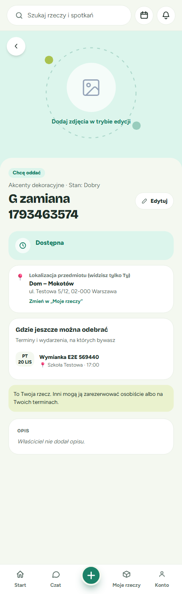
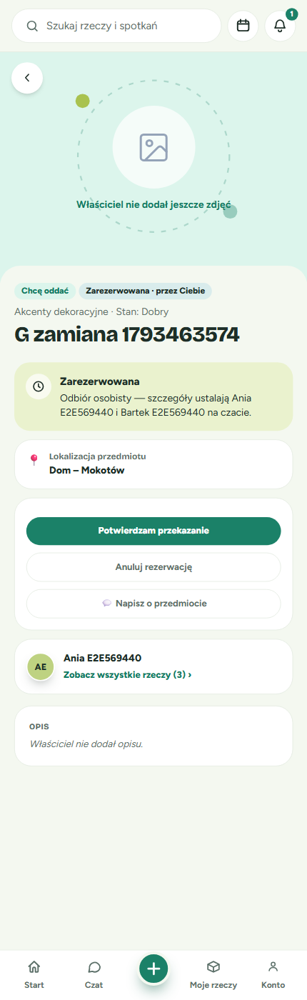
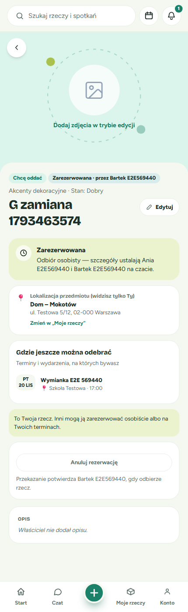
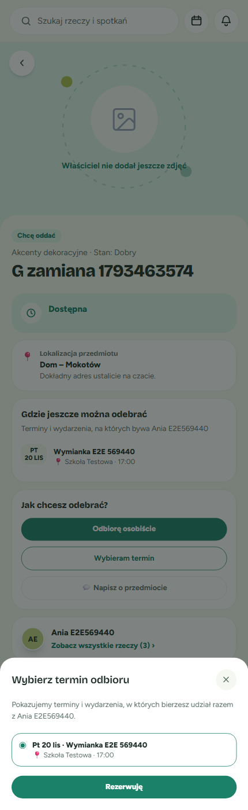
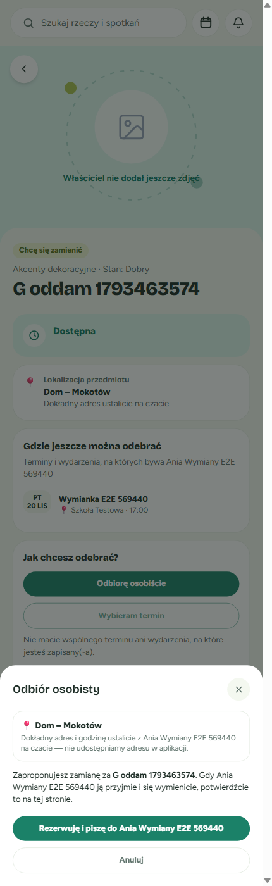
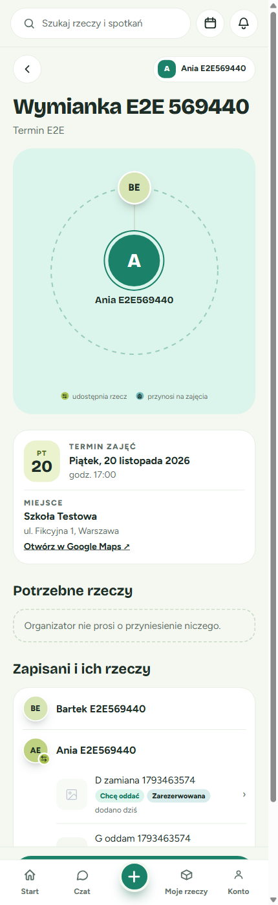
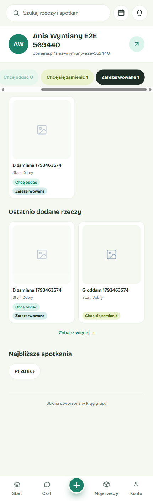
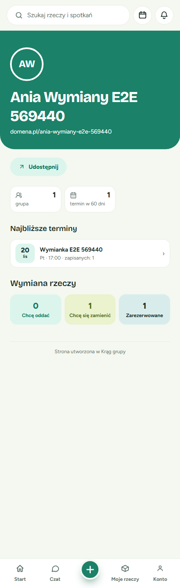

Summary
- Total screens compared: 13 (10 screens + 3 components)
- Match (✓): 8
- Minor deviation (⚠): 5
- Substantive drift (✗): 0
Per-Screen Comparison
screen:product-logged-in (✓ Match)
- Mockup: analysis/design-context/mockups/strona-produktu-zalogowany-3-akcje.html
- Screenshot: verification/screenshots/05-product-logged-in-3-actions.png
- Layout: the intent pill sits above the title. The cards follow the mockup order: status, location, "Gdzie jeszcze można odebrać", "Jak chcesz odebrać?".
- Location: name plus "Dokładny adres ustalicie na czacie." (no address) ✓
- Primary actions: Odbiorę osobiście (filled), Wybieram termin (outline), 💬 Napisz o przedmiocie (ghost). Order and styling match ✓
- States covered: choose (enabled), "Wybieram termin" disabled with hint (
29-product-swap-stranger-term-disabled.png)
screen:product-anonymous (✓ Match)
- Mockup: analysis/design-context/mockups/strona-produktu-niezalogowany.html
- Screenshot: verification/screenshots/20-product-anonymous.png
- Layout: no location block; context list; a "Chcesz tę rzecz?" card with "Zaloguj się" / "Załóż konto" ✓
- Copy: matches word for word
screen:product-own (⚠ Minor Deviation)
- Mockup: analysis/design-context/mockups/strona-produktu-m-j-przedmiot.html
- Screenshot: verification/screenshots/03-product-own-private.png, verification/screenshots/04-product-own-public.png
- Layout: the badges (intent + 🔒 Prywatny), the location card with "(widzisz tylko Ty)", the full address and "Zmień w „Moje rzeczy”", and the "To Twoja rzecz…" line all match.
- Deviation 1: the mockup's PRIVATE item still lists terms and events. The implementation shows none, because R13.5 never offers public-circle terms or events for a PRIVATE item. The public item does show the list (
04-product-own-public.png). This is spec-sanctioned. - Deviation 2: the edit action is an "Edytuj" pill beside the title, not an "Edytuj przedmiot" button at the bottom. This is existing page chrome.
- Impact: none on the information hierarchy.


screen:product-reserved (⚠ Minor Deviation)
- Mockup: analysis/design-context/mockups/strona-produktu-zarezerwowana.html
- Screenshot: verification/screenshots/10-product-reserved-stranger.png, verification/screenshots/09-product-reserved-receiver.png, verification/screenshots/12-product-reserved-giver.png
- Layout: the header badge "Zarezerwowana · przez <imię>", the status card, the location (name only), both actions
aria-disabledwith the hint, and the chat enabled all match ✓ - Deviation: the mockup's status line "Odbiór osobisty — szczegóły ustalają Kasia i Anna na czacie." is shown only to parties. Non-parties see "Ta rzecz jest zarezerwowana.", as R8.5 requires. This is spec-sanctioned.
- Additional: the party buttons (Potwierdzam przekazanie / Anuluj rezerwację) have no mockup. They use the existing button styles, as the spec allows.




screen:sheet-choose-term (⚠ Minor Deviation)
- Mockup: analysis/design-context/mockups/arkusz-wybieram-termin.html
- Screenshot: verification/screenshots/31-sheet-choose-term-swap.png (SWAP), verification/screenshots/06-sheet-choose-term.png (GIFT)
- Layout: the title, ✕, hint, radio rows (day · name, 📍 place · time), SWAP note and "Dalej: wybierz rzecz na zamianę" match ✓
- Deviation: the GIFT primary button reads "Rezerwuję" instead of "Rezerwuję na ten termin" (mockup annotation).


screen:sheet-personal-pickup (⚠ Minor Deviation)
- Mockup: analysis/design-context/mockups/arkusz-odbior-osobi-cie.html
- Screenshot: verification/screenshots/07-sheet-personal-pickup.png, verification/screenshots/30-sheet-personal-pickup-swap.png
- Layout: the title, 📍 place name only, the address-in-chat note, the body, and "Rezerwuję i piszę do <owner>" / "Anuluj" match ✓
- Deviation: the mockup body ends "potwierdźcie je w „Moje rzeczy”". The implementation says "potwierdź przekazanie na tej stronie", the updated copy from spec R5.7 (audit C1). This is spec-sanctioned.


screen:term-participant-items (✓ Match)
- Mockup: analysis/design-context/mockups/strona-terminu-rzeczy-uczestnik-w.html
- Screenshot: verification/screenshots/18-term-page-logged-in-stranger.png, verification/screenshots/19-term-page-anonymous.png
- Layout: rows grouped under each participant, a thumbnail, the name, an intent pill and a reserved pill, a › chevron, the whole row as a link, and no take buttons ✓
- Note: the link goes to
/<org-slug>/product/:id(no query), from spec R5.9organizerItemPath.


screen:organizer-exchange-board (⚠ Minor Deviation)
- Mockup: analysis/design-context/mockups/strona-organizatora-tablica-wymiany-i-liczniki.html
- Screenshot: verification/screenshots/27-organizer-exchange-logged-in.png, verification/screenshots/25-organizer-tab-reserved.png, verification/screenshots/26-organizer-classic-counts-logged-in.png
- Layout: four tabs (Wszystkie / Chcę oddać / Chcę się zamienić / Zarezerwowane) and a 2-column ItemCard grid with "Stan: …", intent and reserved pills ✓
- Deviation 1: the three count tiles shown above the tabs in the mockup are not rendered in the EXCHANGE layout; the counts sit in the tab labels. The tiles do render in CLASSIC.
- Deviation 2: at 430px the tab strip scrolls horizontally and "Zarezerwowane" is cut off.
- Recommendation: design to confirm whether the EXCHANGE layout composition should include the counts block.




screen:owner-items-anonymous (✓ Match)
- Mockup: analysis/design-context/mockups/rzeczy-w-a-ciciela-niezalogowany.html
- Screenshot: verification/screenshots/23-owner-items-anonymous.png
- Layout: the nearest-occasion block, three tabs, a tile grid, intent pills, and "Zarezerwowana" with no name ✓
- Note: the nearest occasion renders as the existing "Najbliższa okazja do odbioru" card rather than a one-line "Najbliżej: …". The same information is shown in the existing component.
screen:my-items-location-visibility (✓ Match)
- Mockup: analysis/design-context/mockups/moje-rzeczy-lokalizacja-i-widoczno.html
- Screenshot: verification/screenshots/02-moje-rzeczy-location-visibility.png
- Layout: the "📍 Gdzie są moje rzeczy?" card with the picker and the exact hint; per-item Oddam/Zamienię; the Publiczna/Prywatna toggle only when a mode is set; "Ustaw tryb…" on the draft; the private hint ✓
- Extra: the existing filter chips (Wszystkie/Oddam/Zamienię) and "+ Dodaj nowe miejsce" button. These are additive.
component:intent-badge (✓ Match)
- Source: strona-terminu-rzeczy-uczestnik-w.html
- Screenshots: 18, 23, 27. "Chcę oddać" uses the primary-soft (teal) tone and "Chcę się zamienić" the accent-soft (lime) tone, as text pills ✓
component:reserved-badge (✓ Match)
- Source: strona-organizatora-tablica-wymiany-i-liczniki.html
- Screenshots: 10, 18, 19, 27. A teal-soft pill reading "Zarezerwowana", "Zarezerwowana · przez <imię>" or "· przez Ciebie" ✓
component:visibility-toggle (✓ Match)
- Source: moje-rzeczy-lokalizacja-i-widoczno.html
- Screenshot: 02. A "🌍 Publiczna / 🔒 Prywatna" segmented control with
aria-pressed; the dark fill marks the selected side ✓